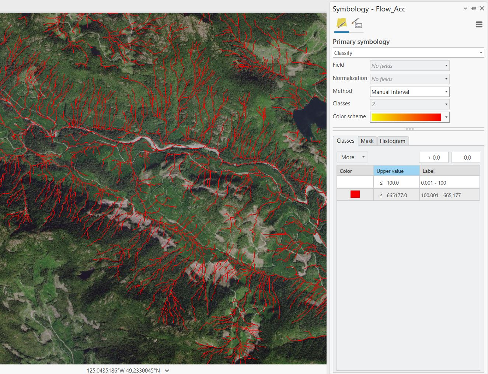
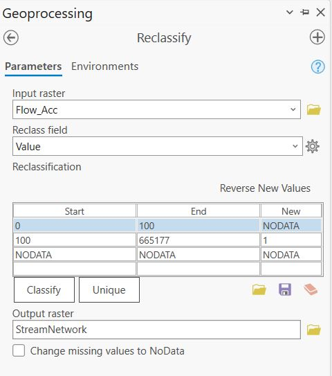
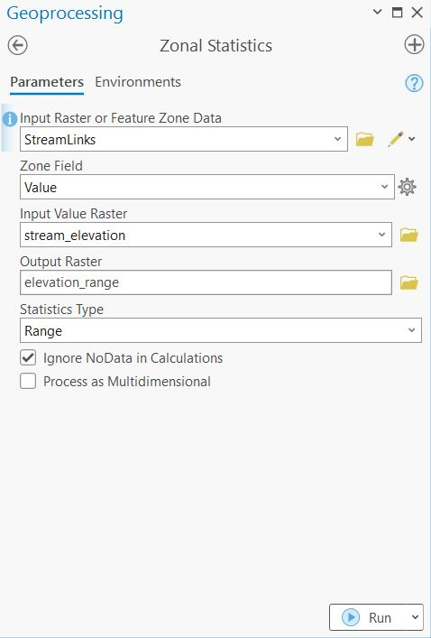
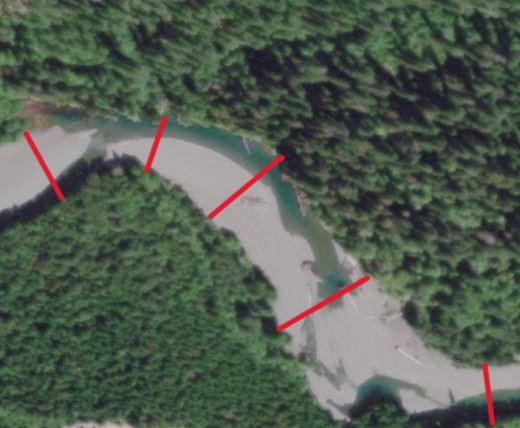
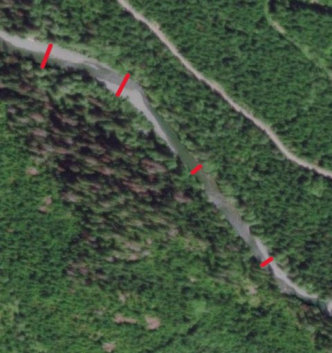
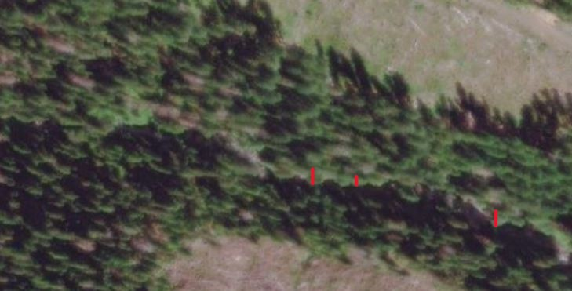
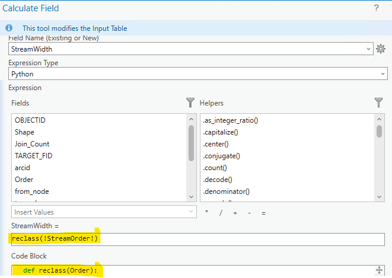
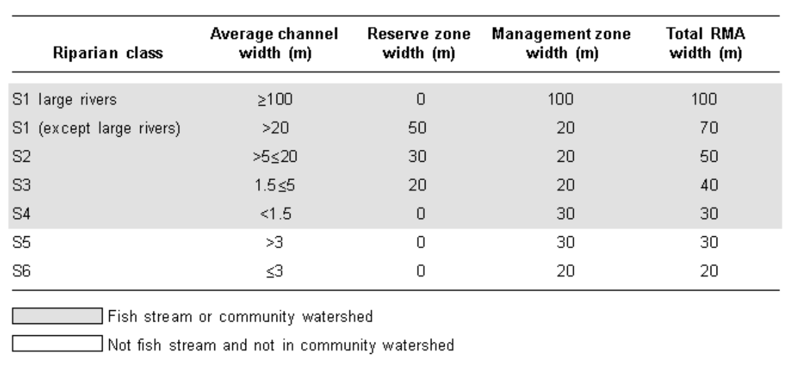
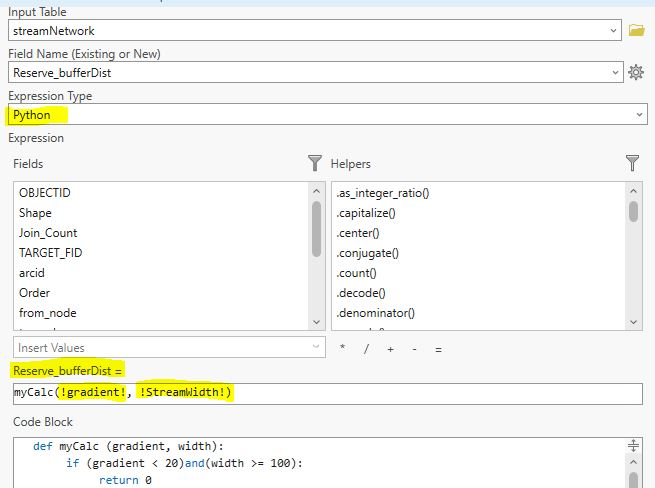
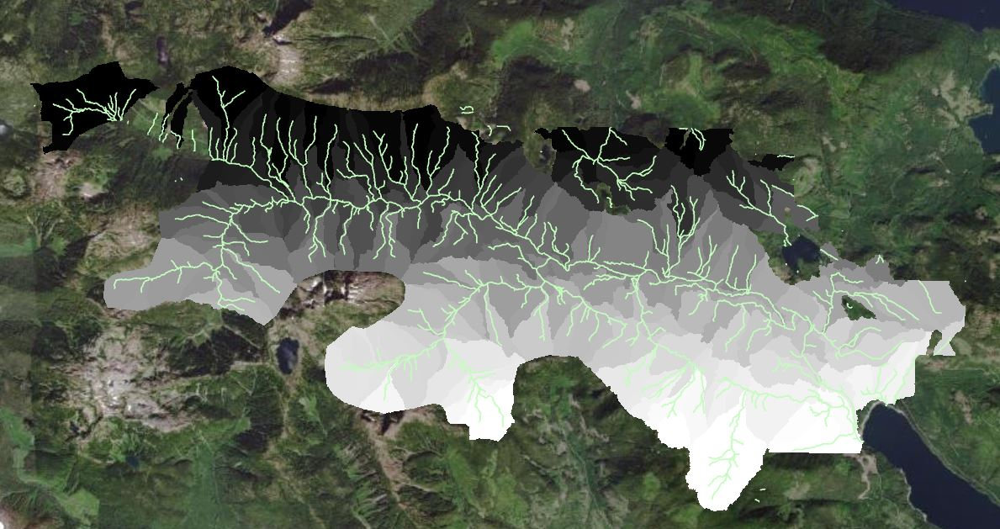

Lab: 6 Terrain Analysis and Riparian Area Management
Written by Hana Travers-Smith
Lab Overview
In this lab you will take on the role of a forest manager with the following task: Define reserve (no harvest) areas within a topographically complex riparian forest using current “best management” practices. To do this you will use a Digital Elevation Model and high-resolution basemaps. The deliverable for this assignment will be a written report where you will assess the application of DEMs for forest management in riparian regions.
Learning Objectives
- Practice characterizing riparian areas using hydrologic toolsets
- Execute tasks using Python scripting
- Evaluate harvestable areas near riparian management areas
Lab Background
Riparian areas are found adjacent streams, lakes and wetlands. In many areas they contain highly productive and commercially valuable timber. However, vegetation in riparian zones also has important ecological function by stabilizing stream banks, regulating water temperature, providing nutrient inputs and reducing runoff into water bodies. In British Columbia, Riparian Management Areas (RMAs) are defined around sensitive streams and rivers that forbid or limit forest harvest activities within them. The width of these buffer zones depend on stream class, which is defined by channel width and fish-bearing potential. Thus, it is critical for forest managers to accurately map and measure stream networks.
Airborne Laser Scanning (ALS) can be used to derive detailed maps of terrain and vegetation structure to aid in riparian forest management. Previous work has been done using ALS to map and extract stream characteristics over large areas and assign stream classes (Tompalski et al., 2017). You will use similar methods to classify streams and define RMAs over a small area in the Nahmint valley, British Columbia.
Throughout this lab stream order refers to the Strahler or Shreve ordering system seen in your previous lab, and stream class refers to the BC government stream classification used to determine riparian management areas.
More background information on riparian forest management in British Columbia can be found here: https://www2.gov.bc.ca/gov/content/industry/forestry/managing-our-forest-resources/silviculture/silvicultural-systems/silviculture-guidebooks/riparian-management-area-guidebook
Deliverables
Answers to the questions posed throughout the lab. (75 points)
Map that shows the stream network polylines (symbolized by stream class), watersheds, contours, an inset map showing example stream network and Riparian Management Areas, and text showing the total area in the Reserve and Management Zone and the length of the stream network. (25 points)
Data
The data for this lab are a Digital Elevation Model (DEM) of the Nahmint watershed region in British Columbia available from the course management system.
Task 1: Prepare the DEM and Map Stream Networks
Step 1: Open a new ArcGIS Pro project and import the “Nahmint_DEM.tif”. We will do a few pre-processing steps before generating a stream network.
Use the “Fill” tool to remove any sinks from the DEM.
Sinks are small imperfections in the DEM that create areas where water cannot flow out of. If sinks are not eliminated, water flow can get trapped within these depressions, leading to unrealistic pooling of water and incorrect delineation of watershed boundaries.
From the geoprocessing pane, search for the “Fill (Spatial Analyst)” tool.
- Input Surface Raster: Nahmint_DEM
- Output Surface Raster: Nahmint_fill
- Z limit: leave blank
The Z-limit represents the minimum depth of sinks that will be filled. For example, if it is set to 10 m then only sinks deeper than 10 m will be filled. For now leave this field blank, this will fill all sinks in the data.
Step 2: Use the “Flow Direction” tool to to calculate the direction of water flow across the landscape. Use the following parameters for the tool:
- Input surface raster: Nahmint_fill
- Output flow direction raster: Nahmint_FlowDir
- Flow Direction Type: D8
- Leave the rest blank/unchecked
There are three flow modelling algorithms, but we will use the simplest: D8. In this model water will flow from one cell to its steepest downslope neighbour. The cell will then be assigned a value based on which of its 8 neighbours water will flow into.
Click Run. You should now have something like the image below:
Figure 6.1: Flow Direction.
What direction is water flowing at points A and B? You will need to interpret this raster in your Results and Discussion. Use the ArcGIS Pro documentation to understand the output if necessary.
Step 3: We will use the flow direction raster calculated in the last step to calculate flow accumulation, which counts the total number of cells that will flow into a given cell. For example, a cell located at the bottom of the hill will have high flow accumulation and a cell at the top of a hill will not have any flow accumulation. Open the “Flow Accumulation” tool and parameterize it as follows:
- Input flow direction raster: Nahmint_FlowDir
- Output flow accumulation raster: FlowAcc
- Output data type: Integer
- Input flow direction type: D8
Leave all other fields blank then run the tool.
Step 4: Next, we will create a raster-based stream network using a threshold in the flow accumulation raster. For example, if the threshold is 100, then only cells with flow accumulation greater than 100 will be counted as a stream. Cells with flow accumulation less than 100 will be set to a background value of 0.
To see how different thresholds impact stream identification, change the symbology of the flow accumulation raster and use the “Manual Interval” symbology to set two classes. See the example below for a stream network with a flow accumulation threshold of 100 (cells with flow accumulation < 100 are set to no color). Note that in the example below the threshold is likely too small, and results in many small streams that are not evident in the ArcGIS basemap.
Q1. What flow accumulation threshold value did you use to create Stream_reclass? (4 points)

Compare your stream network to the streams visible in the ArcGIS satellite basemap and the filled DEM (use the shaded relief symbology for a better visualization). Experiment with different flow accumulation thresholds. What other features could be misclassified as a stream using this method? Find a threshold that captures a realisitc stream network visible in the basemap and DEM, without too many misclassified features.
Once you have selected a threshold, open the “Reclassify (Spatial Analyst Tools)” tool.
Use the threshold you have selected as the Start and End values. Set the cells representing streams to a “New value” of 1 and all other cells to NODATA. Save the new raster as “Stream_reclass”.

Zoom into the reclassified flow accumulation raster to see your stream network.
Step 5: Next, we will assign a stream order to each segment in the stream network. Stream ordering is a system to classify streams based on the number of tributaries (smaller streams) that flow into it. First order streams have no tributaries and higher order streams may have multiple levels of tributaries flowing into it.
Open the “Stream Order” tool and parameterize it as follows:
- Input stream raster: Stream_reclass
- Input flow direction raster: Nahmint_FlowDir
- Method of stream ordering: Strahler
- Output raster: StreamOrder
Zoom in to see the “StreamOrder” output. The value of each pixel corresponds to the order of each stream segment. Now re-run the tool using the Shreve method and compare the two outputs (You will compare these two outputs in the Discussion section of your report).
Q2. Compare and contrast the Strahler and Shreve methods for stream ordering. (5 points)
Step 6: Use the “Stream to Feature (Spatial Analyst Tools)” tool to create polyline features representing the ordered stream network. Parameterize the tool as follows:
- Input stream raster: StreamOrder
- Input flow direction raster: Nahmint_FlowDir
- Output polyline features: StreamNetwork_polyline
- Simplify polylines: Checked
Open the polyline attribute table. The “grid_code” field corresponds to the stream order of the segment. The tool also generates attributes describing the start and end points of each segment and the segment length.
Step 7: Finally, we will assign a unique numeric ID to each stream segment using the “Stream Link” tool. Parameterize the tool as follows:
- Input stream raster: Stream_reclass
- Input flow direction raster: Nahmint_FlowDir
- Output raster: StreamLinks
Zoom in and examine the output.
Task 2: Extract Stream Characteristics
In this task we will calculate stream gradient and estimate width for each segment in the network. These metrics will be used to assign a stream class and define the width of the riparian management area.
Percent gradient is a measure of the streams “steepness” and is calculated as:
\[ \frac{EC}{SL}*100 \] \(EC\) is elevation change \(SL\) is stream length
Streams with a gradient <20% are considered “fish bearing” in the absence of other field data.
Step 1: First, use the “Raster Calculator” tool to multiply the classified flow accumulation layer “Stream_reclass” and the “Nahmint_DEM” layer. This will give elevation within streams. Name the output “streams_elevation”.
Step 2: Open the “Zonal Statistics” tool. This tool calculates summary statistics in one raster layer within “zones” or groups defined in another layer. This is a very useful tool for many applications! We will use the unique IDs from the “StreamLinks” layer as “zones” to calculate the change in elevation within each stream segment.

The resulting raster shows the gain in elevation within each stream segment.
Step 3: We will convert the elevation change raster to polygon using the “Raster to Polygon” tool. (You may have to first convert the raster from floating point to integer format using the Int Tool). Save the output of “Raster to Polygon” as “elevation_change_polygon” and check “Simplify Polygons”. This step will allow us to perform a spatial join with the vectorized stream network. Open the attribute table and note that some attribute names are the same as the “StreamNetwork_polyline”. The attribute “grid_code” represents the elevation gain within each stream segment.
You can change the field names in both layers so you don’t get confused after joining the two features.
Step 4: Open the “Spatial Join” tool and join “StreamNetwork_polyline” with the “gradient_polygon”. Parameterize the tool as follows:
- Target Features: StreamNetwork_polyline
- Join Features: elevation_change_polygon
- Output Feature Class: StreamNetwork_join
- Join operation: Join one to one
- Keep all target features: Checked
- Match Option: Largest Overlap
- Search Radius: 3 Meters
Step 5: Open the attribute table of the “StreamNetwork_join” feature class. If you have duplicated attribute names, the attributes are ordered first with the Target Feature and the Join Features second. You may rename and delete unnecessary attributes. You will need to keep the fields relating to stream order, change in elevation and the length of the polyline features. (There are two Shape_Length attributes from the join so figure out where they come from.)
Create a new field called “PercentGradient” and use the “Calculate Field” tool to calculate the gradient for each stream segment using the change in elevation and the length of the stream segment. Streams with gradient < 20% will be considered as “fish bearing”.
Step 6: Next, we will use the ESRI basemaps to measure stream width for a sample of streams stratified by order. We will use the average stream width per order to approximate the width for all streams in the study area. (For example, if the average width of streams in order 1 is 30 m, all streams in order 1 will be assigned that width).
Stream width is defined using the entire channel width, not just the part with water currently flowing through it. Use the examples below to guide you with your mapping. You should be able to see channels for streams in orders 2-4, but order 1 streams will likely not be visible. We will assign these streams an average width of 1 m. Note that there are more sophisticated methods to calculate stream width from a DEM!
 S4 Stream
 S3 Stream
 S2 Stream (it is barely visible)
Measure 10-15 stream widths per order using the “Measure” tool on your toolbar and record these measurements in an excel document. When you are satisfied with your measurements calculate average width of each stream order. Use the shaded relief DEM and the stream network polyline to help you find some of the smaller order 2 streams.
Step 7: In the “StreamNetwork_join” attribute table, create a new field called “StreamWidth”. We will use an ifelse statement to conditionally assign values to the stream width attribute depending on stream order. Select the “StreamWidth” column in the attribute table and click “Calculate”. In the “Calculate Field” tool, change the “Expression Type” to “Python”.
To use Python in the tool we need to populate two fields. First, the top “Expression” field, which should read StreamWidth =. This is where we can call a function and define the inputs to the function. Here we have called the function reclass with the “StreamOrder” attribute as the input.
Next, in the “Code Block” we need to define the reclass function, so that we can use it as part of an expression. Here we will use an ifelse statement to set the values of stream width based on stream order.

Modify the following code and paste it into the “Code Block” (delete the square brackets before running). Verify the expression using the check button > Apply.
def reclass(Order):
if (Order == 1):
return [average stream width here]
elif (Order == 2):
return [average stream width here]
elif (Order == 3):
return [average stream width here]
else:
return [average stream width here]If you get an “Invalid Field” error it is because the variable in the “Expression Field” (between the two!) does not match a field in the attribute table. So make sure to match the name of the appropriate field. You can use the pre-generated Field names to generate your expression to make sure this step works, just double-click on one to add it to your expression.
Task 3: Mapping Watersheds and Riparian Management Areas
Step 1: Use the following table to assign a stream class (S1-S6) based on average channel width and fish bearing potential. Once a stream class is assigned, the Reserve Zone defines the region around the stream where harvest is prohibited and the Management Zone defines the region where limited harvest is permitted. Note that not all stream classes may be present in the dataset. (We do not have the S1 large rivers class in the study area so no need to include it.)

In the “StreamNetwork_join” layer, create a new attribute called “Reserve_BufferDist” and set the “Number Format” to “Numeric”.
Select the “Reserve_BufferDist” field in the attribute table and open the “Calculate Field” tool. Change the “Expression Type” to “Python”.
This time we will combine the ifelse syntax from the previous task with conditional statements using stream gradient and width to assign buffer distances for each stream class. The example below defines the Reserve Zone buffer distance of 0m for the S1 class using the stream gradient and stream width attributes.
The Reserve Zones and Management Zones are typically measured from the edge of the stream channel, however our streams are represented as lines down the centre of the stream channel. Think of a way to modify the buffer distances given in the table to reflect the approximate width of the stream.
Your code should look something like the following. Make sure the highlighted attribute names in the Expression field match the names in your table, depending on how you named your columns they may look slightly different than this screenshot!:

Use the following template in the “Code Block” to calculate the buffer distance for the remaining Reserve Zones (S1-S6). For classes with a width of 0 set the buffer distance to 0.
def myCalc (gradient, width):
if (gradient < 20)and(width >= 100):
return 0
elif (gradient ...)and(width > ... and width < ...):
...
else:
return ...Repeat the same process for the Management Zone widths.
Step 2: Open the “Buffer” tool and parameterize it as follows:
- Input Features: StreamNetwork_join
- Output Feature Class: Reserve_buffer
- Distance: Use drop-down menu to change to from Linear Unit to Field
- Reserve_BufferDist
- Side Type: Full
- End type: Round
- Dissolve: Dissolve all output features into a single feature
Inspect the output.
Repeat the Buffer step for the Management Zone widths. That is, first create a new field that captures the Management Zone widths in the table above. Then calculate a new field that represents the total of the stream + reserve + management buffer and create a new buffer that uses this value.
Step 3: Next, we will map watersheds. A watershed is an area of land where all the water that falls or flows into it converges to a common outlet, such as a river, lake, or ocean. It is bounded by a drainage divide, which is a boundary that separates water flowing into different watersheds.
The watershed tool uses flow direction and stream links to delineate watershed boundaries. The watershed boundaries will be defined such that water flows into each of the stream links.
Open the “Watershed” tool and parameterize it as follows:
- Input D8 flow direction raster: Nahmint_FlowDir
- Input raster or feature pour point data: StreamLinks
- Output raster: Nahmint_watersheds
The output will be a new raster where the cell values correspond to each unique watershed catchment. You should have something like the following (do not worry if it is not exactly the same as the screenshot):

Step 4: Finally, we will create contour lines to help interpret the the DEM. Open the “Contour” tool and parameterize it as follows:
- Raster: Nahmint_DEM
- Output features class: Nahmint_contour
- Contour interval: 100
- Base contour: [Set to the lowest elevation in the study area]
- Z factor: 1
- Contour type: Contour
Q8. How did stream characteristics change across stream order? Is this what you expected? (10 points)
Q9. Use the watershed map, contour lines and flow direction layers to assess how runoff from harvesting may impact stream networks. Reference specific areas/examples from the maps you created. Do you think the mapped RMAs provide adequate protection to streams in this area? Why or why not? (15 points)
Q10. Discuss strengths and limitations of this workflow for determining riparian reserve and management zones. (10 points)
Map 1. Upload a map that shows the stream network polylines (symbolized by stream class), watersheds, contours, an inset map showing example stream network and Riparian Management Areas, and text showing the total area in the Reserve and Management Zone and the length of the stream network. (25 points)
Summary
The aim of this lab was to practice solving a real-world forest management problem using raster and vector data. You have hopefully gained a thorough understanding of the tools available for modeling hydrology in ArcGIS Pro. In addition, the basemaps in ArcGIS Pro can be a valuable source of high-resolution satellite imagery. Be sure to stand up, stretch and drink some water!
Return to the Deliverables section to check off everything you need to submit for credit in the course management system.